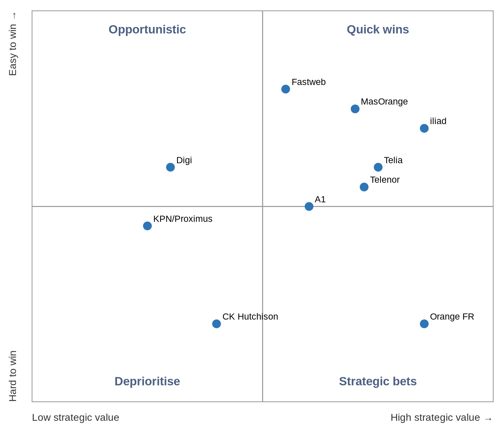

STRATEGY BRIEF
Starlink Mobile: European MNO Partnership Strategy
How SpaceX's Starlink Mobile can keep and grow its European operator partners after the big-4 operators' 19 Oct 2026 letter of intent on a joint bid for 2 GHz satellite spectrum. Status as of 26 Oct 2026.
Status as of 26 Oct 2026
Converted from the Page: Starlink Mobile: European MNO Partnership Strategy
Contents
2. The big-4 bid and the threat to Starlink 3
3. Spectrum and regulatory landscape 4
5. Partner-target segmentation 6
7. Deal structures and commercial models 9
11. What could not be verified 11
1. Executive summary
Bottom line: The big-4 move is a sovereignty play for the EU-reserved part of the 2 GHz band, not yet a binding bid. Starlink already works with operators in three of the four groups through DT, VMO2 (Telefónica JV) and MasOrange (Orange JV). The plan: keep those deals, build a challenger coalition around iliad and the Nordic operators, and offer a sovereignty package so that Starlink is the European venture's partner or second source, not the outsider it is built to keep out. |
- Confirmed: Deutsche Telekom, Orange, Telefónica and Vodafone signed a non-binding letter of intent on 19 Oct 2026 to explore a joint MSS spectrum bid.
- The venture would build EU ground and control infrastructure; its satellite partner is not yet chosen, and the LoI does not replace existing satellite deals.
- The EU proposal leaves only 2 of 6 paired 5 MHz blocks open to non-EU applicants, with a 2x10 MHz cap per applicant. New rights are not expected before 2029.
- Starlink's bridge for 2027–2029 is to run on operator spectrum and work through partners in the EU, and to apply for its own 2 GHz licences in non-EU processes (UK Ofcom, Switzerland, Ukraine).
- Priority targets: convert the MasOrange and Fastweb pilots; sign iliad, Telia and Telenor; hold DT to its 2028 launch.
2. The big-4 bid and the threat to Starlink
What was announced on 19 Oct 2026, from the joint press release (telekom.com, telefonica.com):
Parties | Deutsche Telekom, Orange, Telefónica, Vodafone |
Instrument | Letter of Intent to explore a potential joint bid (non-binding) |
Target | Future EU allocation of MSS spectrum (2 GHz band) |
Model | Operators run the ground network and coordination and monitoring in Europe; open, non-discriminatory D2D access for all MNOs |
Satellites | No direct constellation investment; satellite partner still to be chosen |
Existing deals | LoI states it does not replace existing satellite partnerships |
Lead-up | Bloomberg reported the talks on 7 Sep 2026; Macron called for a European satellite alliance on 10 Sep |
AST SpaceMobile publicly welcomed the LoI on 18 Oct 2026 and calls all four groups its partners. That makes AST the likely default satellite partner, but no selection has been announced.
Openings for Starlink | Threats to Starlink |
+ Satellite partner still open; AST's commercial launch slipped to early 2027 + DT (10 countries) and VMO2 already chose Starlink + Open-access model means any MNO can still buy from Starlink directly + IRIS² secure services not before 2030 | – The venture could take the EU-reserved blocks, leaving Starlink 2x10 MHz at most – Political framing (Politico: 'how Europe plans to squeeze out Starlink') – Pressure on DT, MasOrange and VMO2 to choose the in-house option – Reported Council clause to monitor SpaceX use of EchoStar EU rights |
3. Spectrum and regulatory landscape
The Commission's 27 May 2026 proposal (COM(2026) 311) replaces Decision 626/2008/EC, whose 2 GHz MSS rights, held by Viasat (Inmarsat) and EchoStar, expire in May 2027.
6 × 5 MHz Paired blocks in the band 1980–2010 / 2170–2200 MHz | 2 of 6 Open to non-EU applicants | 2x10 MHz Cap per commercial applicant | 20 years Licence term, renewable once |
Block group | Who can apply | Notes |
|---|---|---|
2 blocks: secure MSS/hybrid | EU-controlled only | Government priority, integrated with IRIS² |
2 blocks: Union new entrant | EU-established, not under third-country jurisdiction for EU MSS | The big-4 venture's likely target |
2 blocks: open track | Member-state or third-country applicants | Starlink's route; EU point of contact and data safeguards |
- All blocks: serve every member state, land EU user traffic in the EU, meet security rules, offer wholesale access on request.
- Milestones include ITU compliance, EU satellite manufacturing and launch contracts before selection (per Covington's summary): a hard test for SpaceX.
- Transfers and leases need Commission approval; an optional two-year bridge would bar incumbents from transferring rights during it.
- EchoStar's final transfer of spectrum to SpaceX targets 30 Nov 2027. Whether its EU 2 GHz rights move with it is unclear.
- Parliament (rapporteur Angelika Winzig) and Council are still negotiating; MEP amendments would raise barriers further.
- Outside the EU: Ofcom runs a separate UK 2 GHz process from 14 May 2027; Starlink has filed a response. Switzerland and Ukraine are national decisions.
4. Competitive landscape
Player | European position | Timing |
|---|---|---|
Starlink Mobile | Live with VMO2 (UK) and Kyivstar; pilots in ES and IT; DT from 2028. Starlink reports 650 D2C satellites and 35 MNO partners (Mar 2026). FCC approved up to 15,000 D2D satellites on 6 Oct 2026. | V2 launches from mid-2027 |
AST SpaceMobile / Satellite Connect Europe | JV with Vodafone; partners Orange, Telefónica, CK Hutchison, Sunrise; ground stations in DE, UK, ES, FR | Commercial early 2027 (slipped) |
Elveo Mobile (Lynk + Omnispace) | Merger closed 14 Aug 2026; SES-backed; 60 MHz S-band; European manufacturing plan | Service mid-2028 |
Skylo | Orange 'Message Satellite' SMS in France since Dec 2025 (Pixel) | Live |
Amazon Leo + Globalstar | Amazon agreed to buy Globalstar (Apr 2026); can bid on the open track | D2D constellation from 2028 |
IRIS² (SpaceRISE, Hispasat D2D layer) | 348 satellites; Hispasat leads the D2D/IoT LEO layer | First launches 2029, services 2030 |
5. Partner-target segmentation
The source Page shows this table in two switchable views (“Profile” and “Fit and approach”). Both views are combined below; priorities beginning with P1 are highlighted.
Operator | Markets | Subscribers | Satellite stance | Fit | Priority | Approach |
|---|---|---|---|---|---|---|
Deutsche Telekom | DE, AT, PL, HU, CZ, SK, GR, HR, ME, MK | 273M group mobile (incl. US) | Starlink Mobile V2 deal (Mar 2026), launch early 2028; also signed the big-4 LoI | Existing | P1 protect | Lock the 2028 launch; offer to be the LoI's satellite partner or a named second source |
Virgin Media O2 | UK (Telefónica / Liberty JV) | Not sourced | O2 Satellite live since 26 Feb 2026, £3/month bolt-on, 1800 MHz | Existing | P1 showcase | Reference case for the EU; publish coverage and usage results; upgrade to V2 |
MasOrange | ES (Orange JV) | Not sourced | Starlink agreement Feb 2026; Valladolid pilot | Existing | P1 convert | Turn the pilot into a commercial launch before the 2027 licence expiry |
Fastweb + Vodafone | IT (Swisscom-owned) | Not sourced | Starlink pilot Jul–Sep 2026 on 2.6 GHz; trial users only | Existing | P1 convert | Commercial launch in Italy; extend the deal to Swisscom in CH |
iliad group (Free, iliad, Play) | FR, IT, PL | 42.2M mobile (H1 2026) | No D2D partner; waiting for services beyond SMS; founder's NJJ owns Salt (Starlink tester) | High | P1 anchor | Anchor of a challenger coalition; V2 broadband pitch with multi-country MFN pricing |
Telia | Nordics, Baltics | Not sourced at group level | No D2D deal found | High (Arctic, sparse areas) | P1 | Coverage and total-defence resilience pitch; Nordic sovereignty package |
Telenor | NO, SE, DK, FI | Sweden 3.13M (Q2 2026) | Sateliot NB-IoT deal only; no smartphone D2D found | High | P1 | Maritime, Arctic and resilience case; pair with Telia for a Nordic bloc |
A1 Group | AT and CEE | 32.1M mobile incl. M2M (H1 2026) | No D2D deal found (Eutelsat TV capacity only) | High | P2 | Competes with DT in AT, HR, MK: offer parity on non-overlapping markets first |
Kyivstar | UA | Not sourced | Live SMS since Nov 2025 | Existing | P2 expand | Add data and voice; use as the wartime resilience reference |
Salt | CH | Not sourced | Starlink partner; non-commercial SMS test Jul 2025 | Existing | P2 | Push Swiss approval; link to the iliad / NJJ conversation |
Elisa / Tele2 | FI, EE / SE, Baltics | Not sourced | No D2D deal found | Medium-high | P2 | Join the Nordic-Baltic bloc on standard wholesale terms |
KPN / Proximus | NL / BE | Not sourced | No D2D deal found | Low coverage gap | P3 | Resilience and public-safety backup offer, not coverage |
Digi | RO, ES, PT, BE | Not sourced | No D2D deal found | Medium | P3 | Low-price wholesale plan |
Orange | FR and EU footprint | Not sourced | Skylo SMS live in France (Dec 2025); AST demos in Romania; in LoI | Coopetition | P2 | Use MasOrange results; offer V2 capacity as interim before IRIS² and AST scale |
CK Hutchison (Three) | AT, DK, IE, IT, SE | Not sourced | Satellite Connect Europe (AST) partner | Low | P3 | Pitch as a non-exclusive second source if AST slips again |
Sunrise / VodafoneThree | CH / UK | Not sourced | AST side: Sunrise demo; VodafoneThree 900 MHz approval, beta early 2027 | Low | P3 | Monitor; keep the door open on resilience backup |
Fit, priority and approach are our own assessment. "No D2D deal found" means none turned up in searches done 26 Oct 2026; it does not prove there is no deal.
Prioritisation matrix

Axes: strategic value (x, low to high) and ease of winning (y, hard to easy). Quadrants: Quick wins (high value, easy); Strategic bets (high value, hard); Opportunistic (low value, easy); Deprioritise (low value, hard).
6. Recommended strategy
1. Hold and convert the beachhead
DT, VMO2, MasOrange, Fastweb, Kyivstar, Salt: turn pilots into commercial launches before May 2027, and publish coverage gains (VMO2: 89% to 95% of UK landmass).
2. Build a challenger coalition
Anchor iliad (FR/IT/PL), then Telia, Telenor, Elisa, Tele2 and A1: non-exclusive deals, most-favoured-nation pricing, one shared EU integration hub.
3. Coopetition with the big-4 venture
Bid to be its satellite partner or a named second source. The LoI keeps existing deals and requires open access, so Starlink can sell through it.
4. Sovereignty package
EU-landed traffic, EU-incorporated operating company, EU gateways and network operations centre, EU-resident lawful intercept, written continuity guarantees.
5. Government, public safety and NATO
Emergency alerts, disaster backup and first-responder priority sold through partner MNOs; NATO flank states (Nordics, Baltics, Poland) first.
6. Spectrum on several tracks
Open-track 2 GHz bid (up to 2x10 MHz); operator-spectrum D2C as the bridge; UK, Swiss and Ukrainian licences; a minority technology role in an EU-controlled licensee only if the final text allows it.
Watch: Sovereignty pledges have to be legally enforceable. Concerns about service continuity tied to the Ukraine experience are the main barrier with governments and regulators. Marketing promises will not overcome them. |
7. Deal structures and commercial models
Model | How it works | Best for |
|---|---|---|
Roaming-style D2C wholesale | MNO lends terrestrial spectrum; satellites act as a roaming network; per-user or revenue-share fee | Current partners, fastest launch |
Retail bolt-on, then bundling | MNO sells an add-on (O2: £3/month), later bundled into premium tariffs | Consumer adoption |
Capacity reservation | Fixed capacity per country with an SLA, priced per unit of capacity | Challenger coalition, enterprise |
Neutral-host via EU entity | EU-controlled licensee holds MSS rights; Starlink supplies satellites and capacity under wholesale access rules | Big-4 venture, sovereignty fit |
Government resilience framework | Priority access, emergency alerts, outage failover under a ministry or civil-protection contract, delivered through MNOs | Public safety, NATO flank states |
Prices other than O2's £3/month are not public. Any fee levels used in negotiation would be estimates and should be labelled as such.
8. Phased roadmap
Period | Phase | Detail |
|---|---|---|
Now – Q1 2027 | Shape and secure | Engage the Parliament and Council negotiations; pitch the big-4 venture; sign iliad and a Nordic operator; convert the ES and IT pilots. |
Q2 – Q4 2027 | Bridge the licence expiry | May 2027 EU and UK expiry; Ofcom UK process; V2 launches from mid-2027; EchoStar closing targeted 30 Nov 2027; open-track application once the selection procedure opens. |
2028 | Launch at scale | DT V2 launch in 10 markets (early 2028); coalition launches; first government resilience contracts. |
2029 – 2030 | Hold position after the new licences | New EU 2 GHz rights expected from 2029; IRIS² services from 2030; renew deals as wholesale access becomes mandatory. |
9. Risks and mitigations
Risk | Mitigation |
|---|---|
Final rules exclude or further limit non-EU operators | Operator-spectrum D2C, the neutral-host role, and non-EU markets |
Big-4 venture picks AST exclusively | Push for multi-vendor wording; stress AST's delays and Starlink's live service |
DT, VMO2 or MasOrange step back under group pressure | Lock commercial launches early and make the coverage gains visible |
Political trust and continuity concerns | Binding governance, EU operating company, step-in rights |
EchoStar EU rights do not transfer (bridge freeze) | Do not plan around them; treat any transfer as upside |
Device support and interference disputes | OEM certification work; early coordination with national regulators and the ITU |
10. KPIs
KPI | Illustrative target (estimate) |
|---|---|
Signed European MNO partners (commercial, not pilot) | 8+ by end-2027 |
European countries live | 15+ by end-2028 |
Pilots converted to commercial | MasOrange and Fastweb by mid-2027 |
Partner subscribers addressable | Track against partners' reported bases |
2 GHz outcome | Open-track award, or a contracted role with an EU licensee |
Government resilience contracts | At least 2 member states by 2028 |
European monthly active users | Report quarterly |
11. What could not be verified
- No formal bid exists yet: the LoI only explores a bid, and the EU selection procedure is not open because the regulation is not adopted.
- The big-4's satellite partner is not confirmed; AST's statement suggests AST but does not confirm it.
- Whether EchoStar's EU 2 GHz authorisation passes to SpaceX is unclear. Starlink's Ofcom filing says the global rights purchase is complete; EchoStar's 8-K puts final closing at 30 Nov 2027.
- The Council's SpaceX monitoring clause comes from a secondary summary of a Euractiv report; the wording is not confirmed.
- A Reuters exclusive (26 May 2026) says Starlink and Amazon may be able to buy into the EU plan; its full text was paywalled.
- Subscriber figures for most mid-tier operators were not sourced and are left blank.
12. Sources
[1] Four European operators sign LoI on joint MSS bid — telekom.com, 19 Oct 2026
https://www.telekom.com/en/newsroom/latest-updates/news/2026/10/deutsche-telekom-orange-telefonica-and-vodafone-have-signed-a-letter-of-intent
[2] Same LoI, Telefónica release — telefonica.com, 19 Oct 2026
https://www.telefonica.com/en/communication-room/press-room/european-operators-sign-letter-intent-explore-joint-bid-mobile-satellite-services-spectrum-advance-direct-device-services/
[3] AST SpaceMobile welcomes the LoI — businesswire.com, 18 Oct 2026
https://www.businesswire.com/news/home/20261018409347/en/AST-SpaceMobile-Advances-Space-Based-Cellular-Broadband-in-Europe-in-Collaboration-with-European-Mobile-Network-Operator-Partners
[4] Commission proposal: EU-level 2 GHz MSS authorisation — digital-strategy.ec.europa.eu, 27 May 2026
https://digital-strategy.ec.europa.eu/en/library/proposal-eu-level-authorisation-systems-providing-mobile-satellite-services-mss
[5] COM(2026) 311 legal text — eur-lex.europa.eu
https://eur-lex.europa.eu/legal-content/EN/TXT/?uri=celex%3A52026PC0311
[6] Analysis of the 2 GHz MSS proposal — insideglobaltech.com, 29 May 2026
https://www.insideglobaltech.com/2026/05/29/a-single-eu-authorisation-for-satellite-spectrum-the-commissions-proposal-for-a-new-2-ghz-mobile-satellite-services-regulation/
[7] European operators get bulk of MSS spectrum — reuters.com, 27 May 2026
https://www.reuters.com/business/media-telecom/european-operators-get-bulk-mobile-satellite-spectrum-rest-non-eu-rivals-eu-says-2026-05-27/
[8] Big-4 in talks on satellite venture — reuters.com, 7 Sep 2026
https://www.reuters.com/business/media-telecom/europes-biggest-mobile-operators-talks-satellite-to-mobile-venture-bloomberg-2026-09-07/
[9] EU telcos close ranks against Starlink — lightreading.com, 8 Sep 2026
https://www.lightreading.com/satellite/eu-telcos-close-ranks-against-starlink-in-joint-bid-for-satellite-spectrum-report
[10] How Europe plans to squeeze out Starlink — politico.eu, 12 Oct 2026
https://www.politico.eu/article/eu-telecom-giants-team-up-against-starlink/
[11] SpaceX's Europe problem: 2 GHz rules — satelliteinsights.com, 13 Oct 2026
https://www.satelliteinsights.com/spacex-carrier-playbook-europe-2ghz-mss-rules/
[12] Council SpaceX monitoring clause (via Euractiv) — sovereigntymonitor.eu, 28 Sep 2026
https://sovereigntymonitor.eu/news/2026-09-28-eu-spacex-spectrum-monitoring-clause/
[13] Telekom and Starlink satellite-to-mobile for Europe — telekom.com, 2 Mar 2026
https://www.telekom.com/en/newsroom/latest-updates/media-information/2026/3/telekom-and-starlink-close-whitespots-across-europe
[14] Starlink Mobile partner list — starlink.com
https://starlink.com/as/business/mobile
[15] O2 Satellite goes live at £3 per month — telecoms.com, 26 Feb 2026
https://www.telecoms.com/satellite/o2-satellite-goes-live-at-3-per-month
[16] Fastweb and Starlink technical pilot — fastwebvodafone.it, 16 Jul 2026
https://www.fastwebvodafone.it/area-media/comunicati-stampa/fastweb-e-starlink-partnership-per-una-sperimentazione-tecnica-per-estendere-la-copertura-mobile-nelle-aree-rurali/?lng=EN
[17] Direct-to-Cell Europe rollout tracker — orbitroam.com, 17 Jul 2026
https://orbitroam.com/guides/direct-to-cell-europe/
[18] Telcos pick satellite sides — lightreading.com, Mar 2026
https://www.lightreading.com/satellite/telcos-pick-satellite-sides-in-mobile-broadband-space-race
[19] EchoStar 8-K: spectrum transfer closing — sec.gov, 22 May 2026
https://www.sec.gov/Archives/edgar/data/1415404/000141540426000013/sats-20260522x8k.htm
[20] Starlink response to Ofcom 2 GHz consultation — ofcom.org.uk
https://www.ofcom.org.uk/siteassets/resources/documents/consultations/200923---future-use-of-2-ghz-mss/responses/starlink.pdf?v=425308
[21] Vodafone UK space service on track for early 2027 beta — ispreview.co.uk, Jul 2026
https://www.ispreview.co.uk/index.php/2026/07/vodafone-uk-says-space-5g-mobile-service-still-on-track-for-early-2027-beta.html
[22] Orange and Skylo satellite SMS — orange.com
https://www.orange.com/en/press-release/orange-becomes-the-first-european-operator-to-offer-satellite-sms-service-using-direct-to-device-technology-402528
[23] CK Hutchison joins Satellite Connect Europe — ckhutchisontelecom.com, 2 Mar 2026
https://www.ckhutchisontelecom.com/en/news/pdf/p260302.pdf
[24] Lynk and Omnispace launch Elveo Mobile — elveo.com, Aug 2026
https://www.elveo.com/news/lynk-and-omnispace-launch-elveo-mobile-with-merger-completion
[25] Amazon to acquire Globalstar — aboutamazon.com, Apr 2026
https://www.aboutamazon.com/news/company-news/amazon-globalstar-apple
[26] IRIS² acceleration — euspa.europa.eu
https://www.euspa.europa.eu/newsroom-events/news/commission-accelerates-iris2-deployment-enhanced-security-and-expanded
[27] Free Mobile on satellite: 'one day maybe' — universfreebox.com
https://www.universfreebox.com/article/590259/une-connexion-satellite-chez-free-mobile-un-jour-peut-etre-mais-loperateur-reste-pragmatique
[28] Salt tests Starlink direct-to-cell — lightreading.com
https://www.lightreading.com/satellite/eurobites-switzerland-s-salt-tests-starlink-s-direct-to-cell-satellite-tech
[29] iliad H1 2026 results — iliad.fr, 27 Aug 2026
https://www.iliad.fr/media/CP_270826_Eng_a920e9c411.pdf
[30] A1 Group half-year report 2026 — a1.com
https://a1.com/wp-content/uploads/sites/6/2026/07/A1-Group_Half-Year-Financial-Report-2026-1.pdf
[31] Sateliot wins Telenor IoT deal — satellitetoday.com, 29 May 2026
https://www.satellitetoday.com/connectivity/2026/05/29/sateliot-wins-new-telenor-iot-deal/